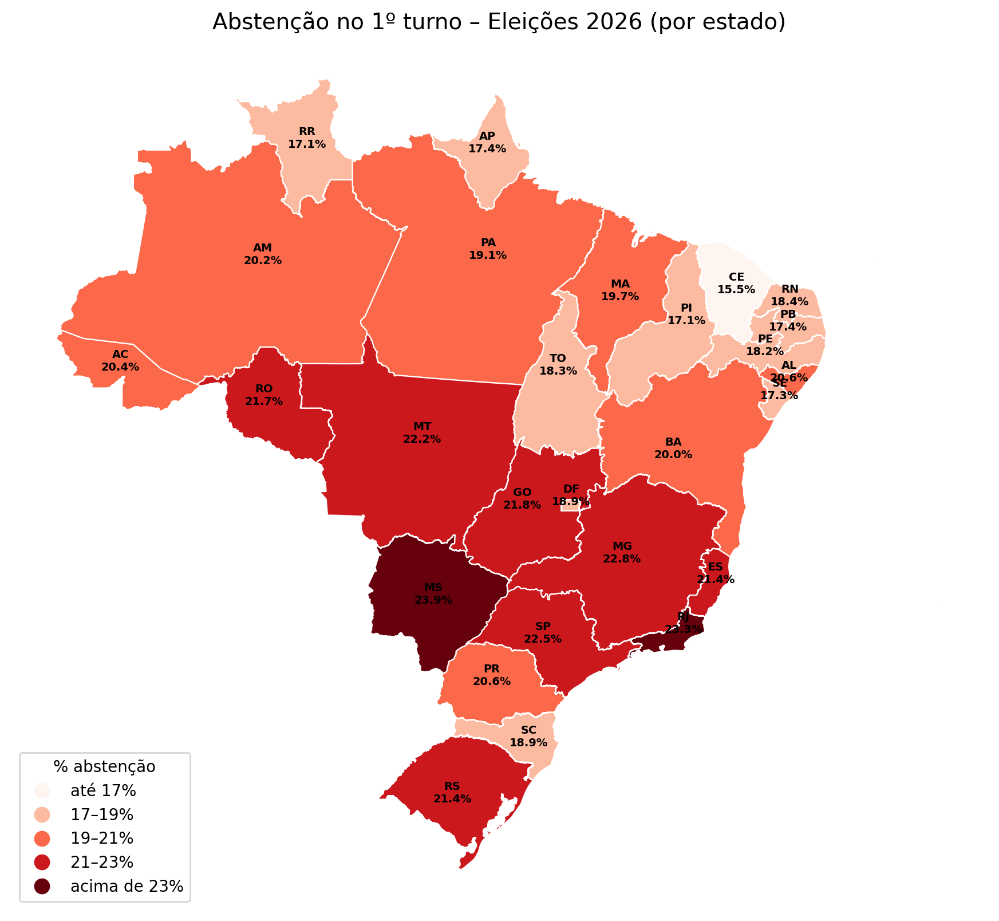
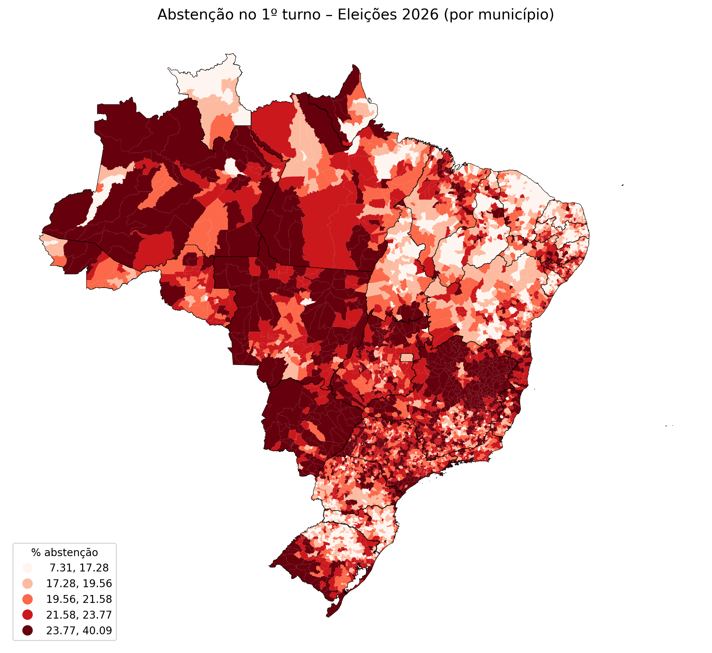

Coletivo Mobiliza DF · @coletivomobilizadf
Onde o Brasil deixou de votar
Abstenção no 1º turno das Eleições 2026 (4 de outubro), por estado, município e região administrativa do DF.
Brasil
20,8%abstenção nacional (sem exterior)
33,5 mieleitores não votaram


Por estado
Metodologia
- Fonte: dados abertos do TSE, arquivo detalhe da votação por seção, 1º turno de 2026, votação para presidente.
- Abstenção = eleitores aptos que não compareceram ÷ total de eleitores aptos.
- DF por região administrativa: cada local de votação foi associado à RA onde está localizado (malha oficial IPEDF 2026).
- Parte da abstenção pode refletir cadastro eleitoral desatualizado (mudança de endereço ou óbito sem baixa), não só a decisão de não votar.